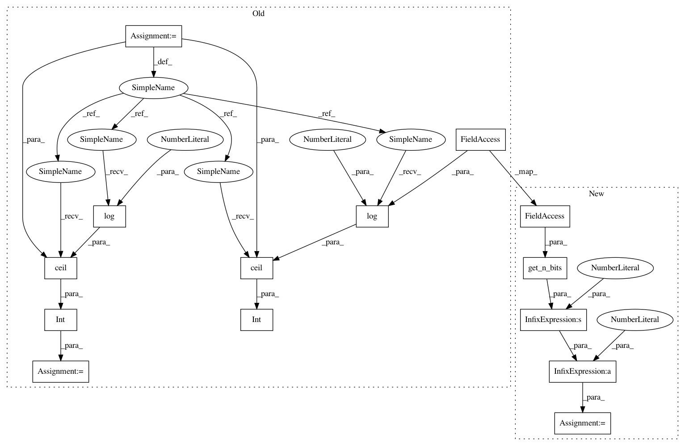

87ff442eb879475c0f46b7098bc633c9d878931e,spynnaker/pyNN/models/neuron/synapse_dynamics/synapse_dynamics_static.py,SynapseDynamicsStatic,read_static_synaptic_data,#SynapseDynamicsStatic#Any#Any#Any#Any#,108
Before Change
def read_static_synaptic_data(
self, post_vertex_slice, n_synapse_types, ff_size, ff_data):
n_synapse_type_bits = int(math.ceil(math.log(n_synapse_types, 2)))
n_neuron_id_bits = int(
math.ceil(math.log(post_vertex_slice.n_atoms, 2)))
data = numpy.concatenate(ff_data)
connections = numpy.zeros(data.size, dtype=self.NUMPY_CONNECTORS_DTYPE)
connections["source"] = numpy.concatenate(
After Change
self, post_vertex_slice, n_synapse_types, ff_size, ff_data):
n_synapse_type_bits = get_n_bits(n_synapse_types)
n_neuron_id_bits = get_n_bits(post_vertex_slice.n_atoms)
neuron_id_mask = (1 << n_neuron_id_bits) - 1
data = numpy.concatenate(ff_data)
connections = numpy.zeros(data.size, dtype=self.NUMPY_CONNECTORS_DTYPE)
connections["source"] = numpy.concatenate(
In pattern: SUPERPATTERN
Frequency: 4
Non-data size: 14
Instances
Project Name: SpiNNakerManchester/sPyNNaker
Commit Name: 87ff442eb879475c0f46b7098bc633c9d878931e
Time: 2018-05-15
Author: Andrew.Rowley@manchester.ac.uk
File Name: spynnaker/pyNN/models/neuron/synapse_dynamics/synapse_dynamics_static.py
Class Name: SynapseDynamicsStatic
Method Name: read_static_synaptic_data
Project Name: SpiNNakerManchester/sPyNNaker
Commit Name: 87ff442eb879475c0f46b7098bc633c9d878931e
Time: 2018-05-15
Author: Andrew.Rowley@manchester.ac.uk
File Name: spynnaker/pyNN/models/neuron/synapse_dynamics/synapse_dynamics_static.py
Class Name: SynapseDynamicsStatic
Method Name: get_static_synaptic_data
Project Name: SpiNNakerManchester/sPyNNaker
Commit Name: 87ff442eb879475c0f46b7098bc633c9d878931e
Time: 2018-05-15
Author: Andrew.Rowley@manchester.ac.uk
File Name: spynnaker/pyNN/models/neuron/synapse_dynamics/synapse_dynamics_stdp.py
Class Name: SynapseDynamicsSTDP
Method Name: get_plastic_synaptic_data
Project Name: SpiNNakerManchester/sPyNNaker
Commit Name: 87ff442eb879475c0f46b7098bc633c9d878931e
Time: 2018-05-15
Author: Andrew.Rowley@manchester.ac.uk
File Name: spynnaker/pyNN/models/neuron/synapse_dynamics/synapse_dynamics_stdp.py
Class Name: SynapseDynamicsSTDP
Method Name: read_plastic_synaptic_data